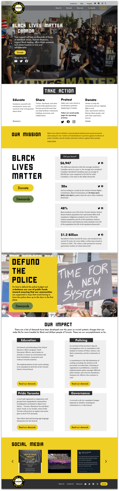
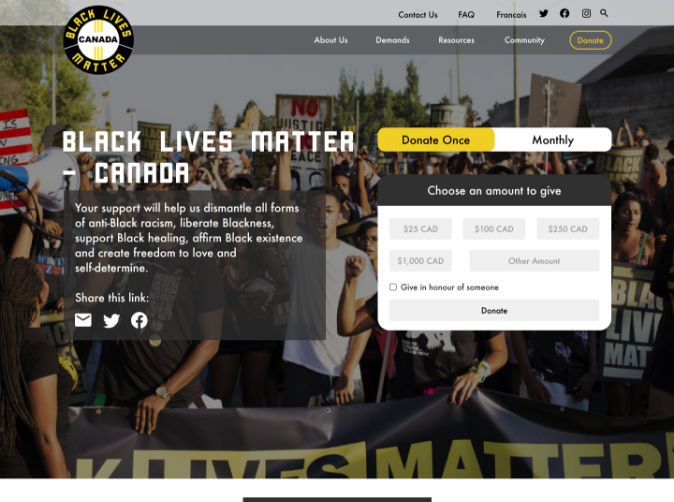
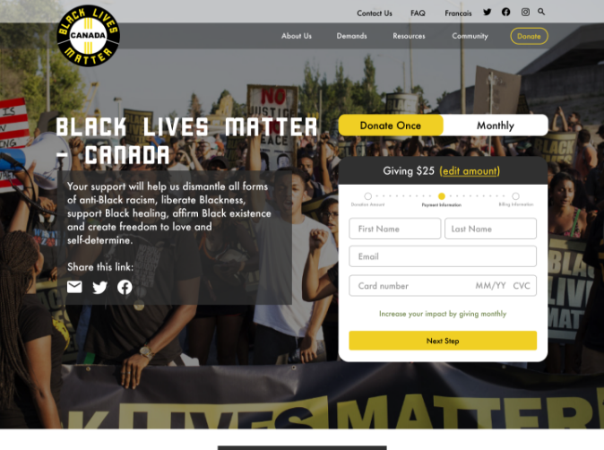
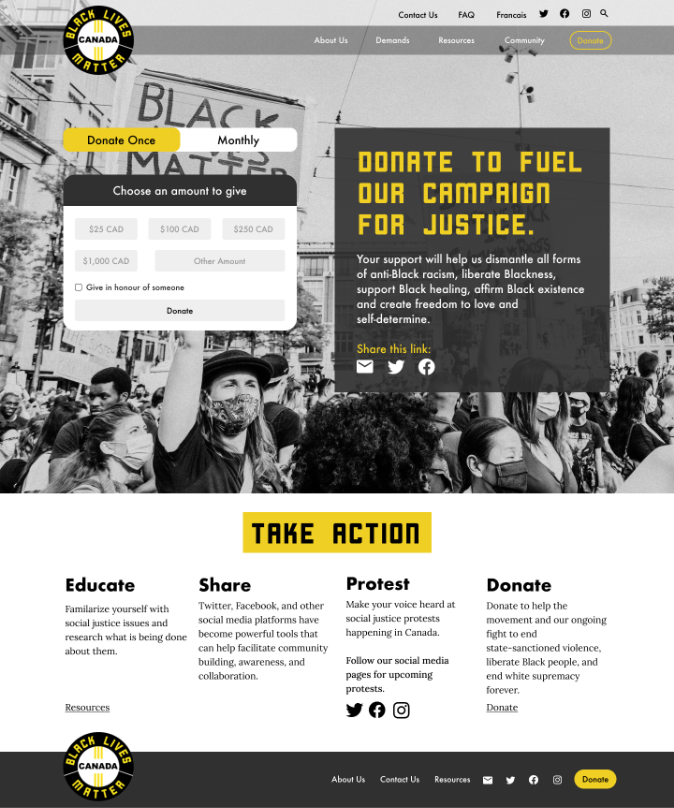

Black Lives Matter (BLM) is a global organization, whose mission is to actively dismantle all forms of anti-Black racism and white supremacy. BLM aims to build local power to intervene in violence inflicted on Black communities.
Images to the left are scrollable.
Responsibilities: UX Research, UX and UI Design
Time Frame: 3 weeks
Team size: 3
The Challenge
Redesign Black Lives Matter Canada’s current website layout into a more modern and cohesive collection of information. The general feedback from users was the website is “too unorganized” with information.
Goal
To provide BLM-Canada with a more credible website, generating more traffic and donations. Organizing the information will also help educate the masses on systemic racism within our society. Focus: Hierarchy, organization, usability, design and layout.
1. Research - Survey, User Interview, Competitive Analysis, Heuristic Evaluation, Affinity Diagram
2. Define - User Persona, Problem Statement
3. Ideate - Brain Storming Ideas, Card Sorting, Site Map, User Flow
4. Prototype - Wireframes, Prototype
5. Test - Usability Testing, Final UI Screens
Research
Survey
A survey completed by 30 participants, primarily 25-35 years of age and have donated to non-profit organizations was completed through Google form. The questions were to identify donating behaviour, participants research methods on non-profit organizations, and how they determine credibility of a non-profit organization. The responses were collected in the form of multiple choice and short answers to get more insights at an early stage.
Survey Statstitics:
89%
Offer monetary donations
75%
Believe layout/content of a website impacts their decision to donate
80%
Believe layout/content of a website reflects an organization’s credibility
7%
Do not do research on organizations before donating
Usability Testing
4 user tests were conducted to gain further insight and a better understanding of the problem. The tests took approximately 10-15 minutes and included topics to get to the core of users' pain points when navigating through the site. Each participant was asked to complete 3 tasks while navigating the website:
Make a donation in honour of an individual and return to the homepage
Find a specific demand that has been accomplished
Using the search bar, find information about police brutality
Interview Data
The data was synthesized as sticky notes (image A) and organized into an affinity diagram (image B).
A heuristic evaluation was completed to reveal insights that can help enhance the website’s usability from early in development. Many layout problems were found such as small texts and inconsistent themes. Bigger problems arose from usability such as legibility, scattered content, and broken links.
Define
User Persona(s)
After getting insights from user research we had a clear understanding of who my target user would be and created a persona. User persona will help me make better design decisions that will satisfy the user’s needs.
With the data gained from the research, we were able to create a well-defined problem statement. This will guide the design towards a feasible solution.
Problem Statement:
Black Lives Matter is an organization that is viewed as an extreme activist group to some, which would deter some people from learning and supporting the movement.
Ideate
Card Sorting and Sitemap
To improve upon the information architecture of the website, we conducted a hybrid card sorting sessions with 12 participants. In the session, participants categorized topics that made sense to them to aid in labelling some groups.
From there, we were able to create a site map that illustrates how pages are prioritized, linked, and labelled.
Style Guide
Before beginning the high-fidelity prototype, we created a design guideline to ensure continuity and consistency of BLM’s original representation.
Prototype
Mid-Fidelity Prototype
Keeping the users' needs and pain points in mind, sketches were created that transitioned into a digital mid-fidelity wireframe to begin testing with the users.
Scroll images below to view complete prototype.
Testing
Usability Testing
We recruited 4 people to test the prototype. The participants were aged between 20 - 35 years, who have donated to a non-profit.
The objective of the test was:
How easily users are able to donate $25
How easily users are able to find information related to “carding”
How does the overall experience feel
What improvements need to be made
Test Results
Test Completion Rate: 100% Error-free rate: 83%
4 out of 4 participants were able to donate with ease
3 out of 4 participants were able to find information related to “carding”
4 out of 4 participants felt the experience was smooth and easy
Final UI Screens
With the feedback provided from the usability test, we designed a high-fidelity wireframe. The design is met with impactful hero images and heavy fonts as the website needed to not only create a dynamic experience for visitors, but remain true to the personality and purpose of Black Lives Matter.
Homepage
Since most users conduct quick research about non-profit organizations, the homepage was designed to have all relevant information readily available. Users are able to donate without exiting the homepage through selecting the “Donate” button available on the hero image.
Scroll image to the right.



About Us Page
This page is used to further inform what BLM-Canada represents and define their cooperation with the BLM international organization. Creating a consistent design throughout the website was critical as familiarity builds trust with visitors.
Scroll image to the left.
Demands Page
The demands page starts off with an impactful hero image and message, "It’s time for a change”. BLM’s current focus is to change the police system. However, the phrase “Defund the Police”, comes with a negative connotation to some. Therefore, as visitors scroll, they’ll be met with a more comprehensible definition.
Scroll image to the right.

Donate Page
The donation page was designed to resemble the homepage. It was kept very simple with an impactful hero image. As visitors scroll down, they’ll be met with a small section that offers multiple methods to support the movement.
Scroll image to the left.
Conclusion
From the research conducted, we realized that it was important for people to be given full transparency with the allocation of their donations. Unfortunately, we were unable to locate statistics or data relating to BLM-Canada online. To further develop this project, it’s critical to know where the donations are being allocated for full disclosure to donors in order to achieve success.
After many attempts, we were unable to contact the stakeholders of BLM-Canada. This would have been extremely helpful in developing the case study. Hopefully, in the future we can establish a contact with them to further develop this project. we would love to send them the redesign and show them the research that was conducted on their behalf.


{kind=link}
{kind=link}